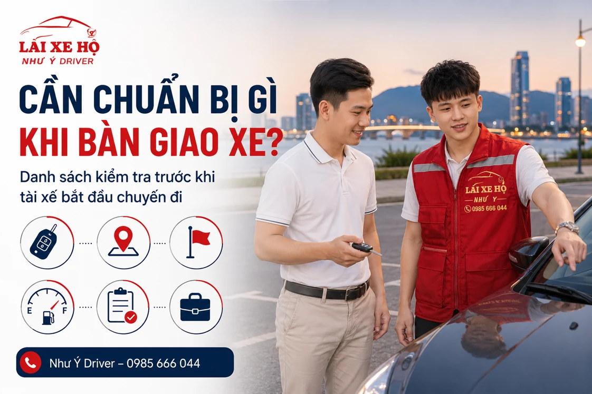

NHƯ Ý DRIVER · CẨM NANG DI CHUYỂN
Cần chuẩn bị gì khi bàn giao xe cho tài xế lái hộ?
Trước khi giao xe cho tài xế lái hộ, hãy đối chiếu đúng người nhận, kiểm tra tình trạng xe, chìa khóa, đồ dùng và hành trình. Danh sách dưới đây chia việc cần làm trước khi đi, lúc bàn giao và khi nhận lại xe để bạn dễ đối chiếu.

Gửi đúng chỗ xe đang đỗ
Địa chỉ nhà hàng hay toà nhà chưa chắc đã đủ để tìm thấy xe. Nếu xe ở hầm, hãy gửi tên cổng vào, tầng, số ô đỗ và vị trí thang máy gần nhất. Nếu đỗ ngoài đường, thêm một điểm mốc dễ nhận biết.
Chuẩn bị điện thoại còn pin để tài xế liên hệ khi tới. Bạn nên chờ ở vị trí đã thống nhất, tránh tự đổi điểm đón mà chưa báo lại.
Đối chiếu thông tin trước khi giao chìa khóa
Kiểm tra tên hoặc thông tin nhận diện tài xế với người điều phối. Nếu có khác biệt, gọi lại đầu mối đặt chuyến trước khi bàn giao. Không giao xe chỉ vì một người nói rằng họ đến nhận chuyến.
Khi đi cùng nhóm, nên có một người phụ trách liên lạc và bàn giao. Điều này giúp tránh tình trạng người này giữ chìa khóa nhưng người khác lại trao đổi lịch trình.
Cùng kiểm tra xe và những lưu ý vận hành
- Quan sát tình trạng bên ngoài xe và ghi nhận dấu vết sẵn có nếu cần.
- Kiểm tra nhiên liệu hoặc mức pin; báo trước các đèn cảnh báo, trục trặc đã biết.
- Giới thiệu cách khởi động, cần số, phanh tay, thẻ qua trạm hoặc thao tác khác với xe thông thường.
- Chuẩn bị giấy tờ xe, chìa khóa, vé gửi xe và thẻ ra vào cần dùng.
- Với xe máy, chuẩn bị mũ bảo hiểm và nói rõ xe số, tay ga hay côn tay.
Thống nhất điểm đến và giữ đồ dùng cá nhân
Gửi địa chỉ cuối cùng, các điểm ghé và lối vào nơi trả xe. Nếu về chung cư hoặc khu có kiểm soát, nói rõ hầm được phép vào và người mở cổng. Bạn cũng nên hỏi cách tính khi chờ hoặc thay đổi điểm đến.
Cất điện thoại, ví, giấy tờ và đồ giá trị ở nơi mình quản lý được. Nếu xe có thiết bị hoặc vật dụng cần giữ nguyên vị trí, hãy nói trước với tài xế.
Kiểm tra lại khi kết thúc chuyến
Trước khi xuống xe, nhìn lại ghế ngồi, cốp và các vị trí để đồ. Nhận chìa khóa, kiểm tra xe đã đỗ đúng nơi và hoàn tất thanh toán theo nội dung thống nhất. Nếu có điều gì cần làm rõ, trao đổi với tài xế và điều phối ngay khi bàn giao.
Bạn có thể lưu danh sách ngắn: đúng tài xế – đúng xe – rõ lộ trình – đủ đồ – nhận chìa khóa. Khi cần đặt chuyến mới, xem hướng dẫn đặt tài xế Như Ý Driver.
Danh sách kiểm tra nhanh trước và sau chuyến
| Thời điểm | Những việc nên làm |
|---|---|
| Trước khi tài xế đến | Chuẩn bị vị trí xe, chìa khóa, vé bãi và người liên lạc. |
| Khi gặp tài xế | Đối chiếu thông tin, ghi nhận tình trạng xe, nhắc thao tác riêng. |
| Trước lúc khởi hành | Chốt điểm trả, chặng ghé, nơi đỗ cuối và chi phí đã trao đổi. |
| Kết thúc | Nhận chìa khóa, kiểm tra đồ dùng và làm rõ vấn đề ngay khi bàn giao. |
Nếu người đặt khác người giao hoặc nhận xe, nêu rõ từng người và số liên hệ. Với xe thuê/mượn, chỉ tiến hành sau khi điều kiện đổi người lái đã được chủ xe xác nhận.
Nên hỏi gì về trách nhiệm trước khi bàn giao?
Trước khi chốt, hãy hỏi đơn vị cung cấp về phạm vi công việc, người liên hệ khi có vấn đề và cách ghi nhận tình trạng xe. Nếu có điều khoản sử dụng, bảo hiểm hoặc cách xử lý sự cố, yêu cầu giải thích đúng với chuyến của bạn; không suy từ quảng cáo chung.
Nếu cần biết điều kiện bảo hiểm hoặc cách xử lý khi có sự cố, hỏi rõ đơn vị cung cấp trước khi giao xe và lưu nội dung đã thống nhất. Với xe thuê hoặc mượn, kiểm tra thêm sự đồng ý của chủ xe và các điều kiện liên quan.
- Ai là đầu mối tiếp nhận thông tin khi phát sinh vấn đề?
- Tình trạng xe, đồ dùng và chìa khóa được ghi nhận thế nào?
- Các điều kiện nào đã được thống nhất và có thể lưu lại?
- Nếu có thay đổi hành trình, ai có quyền xác nhận và cập nhật chi phí?
Nếu phát hiện điểm cần làm rõ, dừng việc bàn giao ở vị trí phù hợp và liên hệ điều phối để thống nhất cách xử lý. Giữ lại nội dung trao đổi và thông tin chuyến để đối chiếu.
Câu hỏi thường gặp
Xe thuê tự lái có bàn giao cho tài xế dịch vụ được không?
Cần kiểm tra hợp đồng, sự đồng ý của bên cho thuê và điều kiện bảo hiểm trước. Không mặc định mọi xe thuê đều được phép đổi người lái.
Xe có thao tác đặc biệt thì nên báo lúc nào?
Nên báo từ khi đặt và hướng dẫn lại tại điểm bàn giao, trước lúc xe khởi hành.
Thông tin liên quan
HÃY CHỦ ĐỘNG CHO CHUYẾN ĐI
Cần người lái xe thay bạn?
Gửi điểm đón, điểm đến, loại xe và giờ đi. Như Ý Driver sẽ kiểm tra lịch, thống nhất chi phí và thời gian đón trước khi xác nhận chuyến.